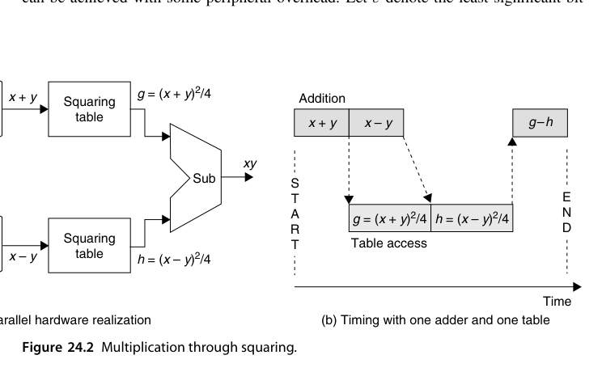
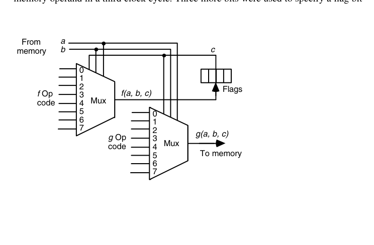
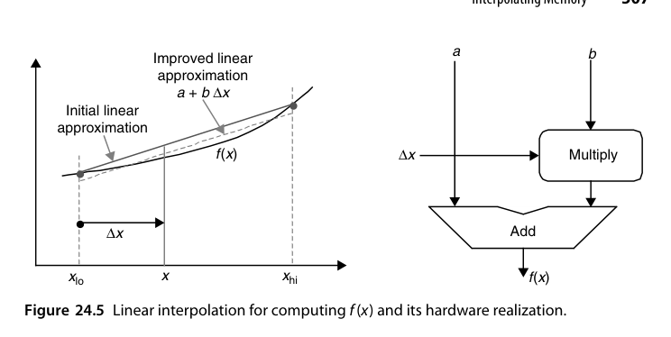
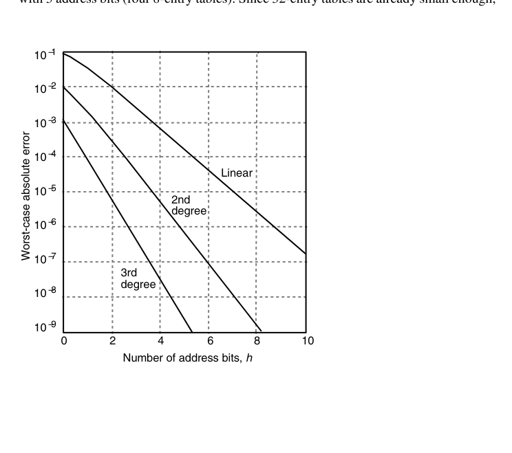
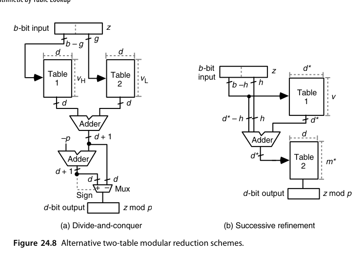
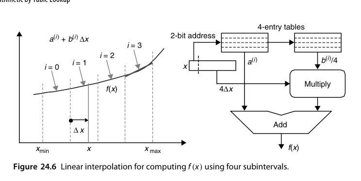
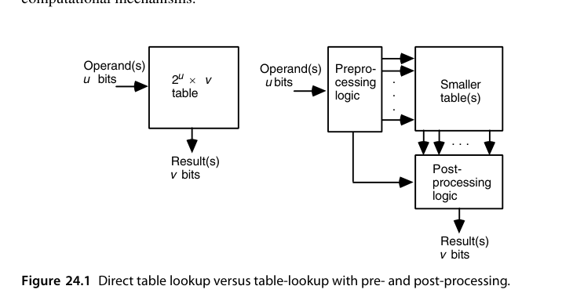
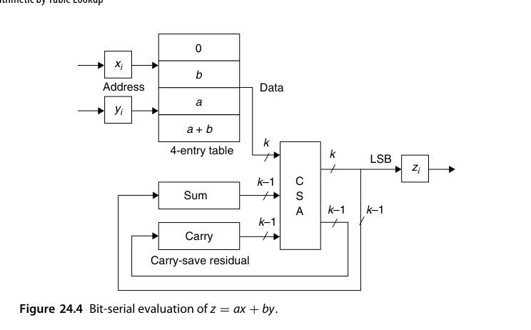

第24章 查表算术（Arithmetic by Table Lookup）
本章导读
“存起来代替算出来”是最古老的加速思想。ROM/RAM 成本暴跌让查表法从小把戏变成严肃的算术技术：直接查表、插值表、分段表、多部件表（multipartite）。本章的主题是表大小与精度的经济学——这也是 16.6 节（除法初值表）与 AI 时代 LUT-based 推理的共同语言。
24.1 直接与间接查表（Direct and Indirect Table Lookup)
- 直接查表：输入 \(k\) 位 → \(2^k\) 项表。\(k\) 稍大就不可行（16 位输入 = 64K 项）——只适用于小位宽或粗精度；
- 间接查表：先用逻辑把输入压缩/变换到更小的索引空间（如利用对称性：\(\sin\) 只需存 \([0, \pi/4]\)；利用前导零定位规格化），再查小表。
查表法的本质是用存储换计算，而”间接”是用少量计算换大量存储。这条压缩索引的思路与缓存的组相联、哈希表的设计一脉相通。
查表法在 VLSI 里的物理依据是：存储比随机逻辑密度高得多。多兆位查表已实用，且 ROM（尤其加了检错/纠错编码的）比组合逻辑更稳健；若用 RAM + 可重构外围逻辑，同一块硬件换表即算不同函数——设计、验证、测试、改版、维护全线受益。但直接表的容量曲线是指数级的：一元函数（\(1/x\)、\(\ln x\)、\(x^2\)）输入 16~24 位尚可承受（64K~16M 项）；二元函数（\(xy\)、\(x \bmod y\)、\(x^y\)）超过约 12 位就基本出局；三元以上彻底无望。
于是本章的主旋律是三招压表术：预处理/后处理（24.2 节）、位串行化与多位拆分（24.3 节）、插值/分段/多部件（24.4-24.6 节）。纯逻辑实现与纯查表实现是一条谱系的两个端点，实用设计几乎都停在中间某处——两端出发都能推导出同一批混合方案。
24.2 二元到一元归约（Binary-to-Unary Reduction)
一种结构化的表实现：把二进制输入译码为”一元/温度计码（thermometer code）“，每根译码线驱动一行表项——本质上就是 ROM 的内部结构（译码器 + 存储阵列）。理解这一层有助于估算”查表”在 ASIC 里的真实成本：译码逻辑 + 阵列，而非抽象的”一次访问”。
“用一元函数表算二元函数”有两个经典案例，都值得细看。
例一：对数数制的加法（18.6 节）。对数域相加 \(L_z = \log(x \pm y)\) 可变换为
\[ L_z = L_x + \log(1 \pm \log^{-1}\Delta), \qquad \Delta = L_y - L_x \]
预处理：比大小定符号、算 \(\Delta\)；查一元函数表得 \(\log(1 \pm \log^{-1}\Delta)\)；后处理：加 \(L_x\)。三段流水后节拍由表访问时间决定——比纯逻辑的对数加法器划算得多。
例二：乘法变平方。恒等式
\[ xy = \frac{(x+y)^2 - (x-y)^2}{4} \]
把二元乘法化成一元平方：预处理算 \(x \pm y\)，查平方表（可共用一张表访问两次），后处理一减一移位。表还有免费的压缩：\(x+y\) 与 \(x-y\) 同奇偶，故两个平方数的最低 2 位相同（\(00\) 或 \(01\)）、相减必然对消——表项可截掉 2 位，末尾移位也省了。更激进的压缩：记 \(\varepsilon\) 为 \(x \pm y\) 的最低位，可证
\[ \frac{(x+y)^2 - (x-y)^2}{4} = \left\lfloor \frac{x+y}{2} \right\rfloor^2 - \left\lfloor \frac{x-y}{2} \right\rfloor^2 + \varepsilon y \]
于是丢掉两数的最低位、查 \(2^k \times (2^k - 1)\) 的表，再用一个 CSA 把 \(\varepsilon y\) 并入三操作数加法——表再省一半，代价是后处理多一路 CSA（\(\varepsilon y\) 与首项加法的延迟可被第二次表访问掩盖）。这是”表容量 vs. 外围逻辑”权衡的教科书案例。另有一种与函数无关的拆表法：若 \(v\) 位结果的低 \(w\) 位只依赖输入的低 \(l\) 位，可拆成 \(2^l \times w\) 与 \(2^k \times (v-w)\) 两张表，总容量从 \(2^k v\) 降到 \(2^k v - (2^k - 2^l) w\)。

24.3 位串行算术中的表（Tables in Bit-Serial Arithmetic)
位串行运算里，表可以替代组合逻辑：\(k\) 位状态 + 输入比特 → 查表得输出与新状态。这是分布式算术（distributed arithmetic, DA）的思想源头——把”乘加”的位级结构重排成按位查表累加，FPGA 上实现 FIR 滤波器时大放异彩（28.4 节）。
三个风格迥异的例子说明”表”在位串行世界里能干什么。
例一：CM-2 的查表 ALU。Connection Machine CM-2 每个处理器极简（16 个核挤在一片 1980 年代中期的芯片上），ALU 收 3 个 1 位输入、产 2 个 1 位输出，且每个输出允许是输入的任意 \(2^{2^3} = 256\) 种布尔函数之一。编码方案令人拍案：每个 3 输入布尔函数恰好由 8 位真值表完全刻画——真值表本身就是操作码。硬件上整个 ALU 就是两个 8 选 1 多路器（下图）。做加法时 \(a, b\) 是操作数位、\(c\) 是进位：\(f\) 选多数函数（\(00010111\)，即 \(ab \vee bc \vee ca\)）当进位输出、\(g\) 选三输入异或（\(01010101\)）当和位。\(k\) 位加法要 \(3k\) 拍，但 64K 个处理器并行——“蚂蚁军团”式的取舍。

例二：位串行模归约。把数逐位送入，每位 \(x_i\) 查小表得 \(x_i r^i \bmod m\)（\(r\) 为基数权），模加进运行和；除最后一次外全部用保留进位加法并与下一次查表重叠——转换延迟 = \(k\) 次表访问。这是 4.3 节 RNS 数制转换的表实现。
例三：位串行线性表达式 \(z = ax + by\)（DA 的雏形）。把 \(x, y\) 按 LSB 逐位展开：
\[ z = \sum_{i=0}^{k-1} (a x_i + b y_i)\, 2^i, \qquad ax_i + by_i \in \{0,\ b,\ a,\ a+b\} \]
4 种取值查一张 4 项表，余数递推 \(s^{(i+1)} = \lfloor s^{(i)}/2 \rfloor + f(x_i, y_i)\)，移出的位即输出 \(z_i\)——余数保持保留进位形式时全程不需要进位传播加法器（结构见章末图 24.4）。\(a, b\) 是常数，意味着这张表可退化为纯连线；结果超宽时把输入 0 扩展、晚 \(k\) 拍收输出即可。
24.4 插值存储器（Interpolating Memory)
直接查表的精度受限于表项数；插值让精度起飞：
- 存函数在网格点的值（以及可能的导数），中间值用线性/二次插值；
- 一次”查表” = 读两个邻点 + 一次乘加：\(f(x) \approx f(x_0) + (x - x_0) \cdot \frac{f(x_1)-f(x_0)}{x_1 - x_0}\)；
- 等价于分段线性逼近：表存系数（\(a_i, b_i\) 对），计算 \(a_i x + b_i\)。
精度-成本曲线：表项数减为 \(1/n\)（区间变宽），误差升为 \(O(h^2)\)（\(h\) 为区间宽）——用一次 FMA 的代价换存储的平方级压缩，通常极划算。
把公式落到实处。插值式表面要 4 加 1 乘 1 除，但把区间端点取成 2 的相邻幂后，除法与两次加法全变成移位/拼位。最粗糙的例子：\([1,2)\) 上的 \(\log_2 x\)，因 \(\log_2 1 = 0\)、\(\log_2 2 = 1\)，线性插值退化为 \(\log_2 x \approx x - 1\)——最大绝对误差 0.086（在 \(x = \log_2 e\) 处），不可用但结构已现。改进一档：不用端点连线，而用最坏误差最小的斜线（下图），得 \(\log_2 x \approx 0.043\,036 + (x - 1)\)，误差减半——但单条直线终究不够，于是把区间切成 \(2^h\) 段，每段存一对系数，查表 + 1 乘 1 加完成求值：
\[ f(x) \approx a^{(i)} + b^{(i)}\,\Delta x, \qquad i = x \text{ 的 } h \text{ 个最高位}, \quad \Delta x = \text{其余位} \]

两个抠门的细节：为省地址/数据位宽，表中存 \(b^{(i)}/4\) 而用 \(4\Delta x\)（天然多 2 个前导 0）做乘法；二阶插值 \(a + b\Delta x + c\Delta x^2\) 可再压误差，且 \(\Delta x^2\) 的平方能与查表并行，但三阶以上通常不划算。以 \([1,2)\) 上的 \(\log_2 x\)、4 子区间为例，各段最坏误差从 ±0.0045 递减到 ±0.0016——比单线方案的 0.086 好一个数量级以上。
精度-成本的定量曲线（下图）是选型工具：\(m\) 阶插值、\(h\) 位地址时表项总数为 \((m+1) \cdot 2^h\)。若总表预算 256 字：线性插值可用 \(h = 7\)（最坏误差约 \(10^{-5}\)）、二阶 \(h = 6\)（\(10^{-7}\)）、三阶（\(10^{-10}\)）；反过来若指标定为 \(10^{-6}\)：线性要 \(h = 9\)（两张 512 项表）、二阶 \(h = 5\)（三张 32 项表）、三阶 \(h = 3\)（四张 8 项表）——32 项的表已经够小，三阶多出的乘法器抵不过那点精度收益，通常二阶封顶。不同函数的误差曲线形状与此高度相似（所需地址位差 ±1 以内），因此可以造通用插值存储器：换 ROM 内容或重载 RAM 即换函数。

均匀分段之外还能按曲率分段：曲率大的区域窄段、平缓区域宽段。非均匀段的地址生成也不贵——例如 \([0,1)\) 按前缀模式 \(0xx, 10x, 110, 111\) 分成宽度 1/2, 1/4, 1/8, 1/8 的四段，几根门线即可把 3 位区间索引译成表地址；代价是各段 \(\Delta x\) 的提取规则不同。
24.5 分段查找表（Piecewise Lookup Tables)
函数曲率不均匀时（如 \(1/x\) 在 \(x \to 0\) 附近剧烈弯曲），均匀分段浪费表项：平缓区段可以稀疏，剧烈区段必须密集。变长分段（地址高位先经”段译码”）让存储预算花在刀刃上。与 23.5 节分段多项式是同一思想。
两个代表性方案把”操作数切片查表”发挥到极致。
例一：单精度函数求值（Wong 方案）。把 26 位尾数 \(x\)（2 整数位 + 24 小数位）切成四段：
\[ x = t + \lambda u + \lambda^2 v + \lambda^3 w, \qquad \lambda = 2^{-6} \]
在 \(t + \lambda u\) 处做泰勒展开、丢弃 \(\lambda^5\) 以下各项，得
\[ f(x) \approx f(t{+}\lambda u) + \frac{\lambda^2}{2}\left[f(t{+}\lambda u{+}\lambda v) - f(t{+}\lambda u{-}\lambda v)\right] + \frac{\lambda^2}{2}\left[f(t{+}\lambda u{+}\lambda w) - f(t{+}\lambda u{-}\lambda w)\right] + \lambda^4\left[\frac{v^2}{2}f^{(2)}(t) - \frac{v^3}{6}f^{(3)}(t)\right] \]
流程：4 次加法造出 4 个 14 位查表地址 → 读 5 个 \(f\) 表值 + 1 个修正项表值 → 一次六操作数加法。可证误差 \(< 2^{-24} = \text{ulp}/2\)；对 24 位操作数穷举实测精度 27.3~33.3 位——查表为主、外围几乎只有加法的单精度函数求值方案。
例二：模归约的两表法。求 \(b\) 位数 \(z \bmod p\)（\(d = \lceil \log_2 p \rceil\)）。分治式：把 \(z\) 按 \(g\) 位切成高低两半 \(z = 2^g z_H + z_L\)（\(g \ge d\)），两半各查一张 \(d\) 位余数表、相加后试减 \(p\) 定结果；总表容量 \(d(\lceil m/2^g \rceil + 2^g)\) 在 \(g = \lfloor b/2 \rfloor\) 时最小——例：\(p = 13\)、\(m = 2^{16}\) 时总容量 2048 位，比直接查表省 128 倍。逐次精炼式：高位 \(b - h\) 位查第一张表得”应减去的 \(p\) 之倍数”的低位部分，加到 \(z\) 上把范围从 \([0, m)\) 压到 \([0, m^*)\)（\(p < m^* \ll m\)），第二张 \(m^*\) 项表直接查 \(z^* \bmod p\)；例中取 \(d^* = 9\)、\(m^* = 269\)，总容量 3380 位——表比分治式大，但外围只剩一个加法器（\(m^* < 2p\) 时第二张表还能退化成减法器 + 多路器）。两方案见下图。

24.6 多部件表方法（Multipartite Table Methods)
Multipartite / 双侧（bipartite）表：把输入拆成高、中、低几段，函数值近似为几张小表之和：
\[ f(x) \approx T_0(x_{hi}) + T_1(x_{hi}, x_{mid}) + T_2(x_{hi}, x_{lo}) \]
每张表都比全表小得多，总和误差可控。典型效果：24 位精度的倒数表，直接查表需天文存储，bipartite 只需几十 KB。
Bipartite（双部件）表是插值思想的一次”去乘法化”。把 \(k\) 位输入 \(x\) 切成三段：\(x_0\)（\(a\) 位，选区间）、\(x_1\)（\(b\) 位，选子区间）、\(x_2\)（其余 \(k - a - b\) 位）。区间内所有子区间共用一条斜率，斜率乘 \(x_2\) 的全部可能取值于是可以直接制表：
\[ f(x) \approx \underbrace{u(x_0, x_1)}_{\text{子区间常数表，} 2^{a+b} \text{ 项}} + \underbrace{v(x_0, x_2)}_{\text{区间斜率} \times x_2 \text{ 表，} 2^{k-b} \text{ 项}} \]
两张表 + 一个加法器——加法器还能省掉：两表输出按保留进位形式直接交给后续计算步骤。误差有四个来源：线性化截断、区间共用斜率、表项舍入（\(g\) 位保护位）、最终舍入；设计自由度就是 \(a, b, g\) 三个参数，任务是凑出目标误差下的最小总表容量。
\(k = 24\) 时直接查表需 \(2^{24}\) 项。取 \(a = b = 8\)：两张 \(2^{16}\) 项表共 \(2^{17}\) 项，压缩 128 倍；\(a = 7, b = 8\) 压到约 170 倍（精度略降）；\(a = 10, b = 7\) 精度更好但压缩降到 64 倍。多数初等函数在此配置下可达 1 ulp 误差——即忠实舍入（faithful rounding）：误差不超过 1 ulp、方向任意；更强的精确舍入（exact rounding）要求误差 \(\le \frac{1}{2}\) ulp，纯表方法一般做不到。
两个增强方向。对称 bipartite：利用每个子区间内函数值关于中点近似对称，表存中点值、按 \(x_2\) 最高位决定加/减斜率项并做选择性取补——表再省一半，代价是两排异或门与微小附加误差。Multipartite：推广到三张表以上——tripartite 把输入切成 4 段，三张表分别以 \((x_0, x_1)\)、\((x_0, x_2)\)、\((x_0, x_3)\) 为地址，进一步压表并改善误差。表内容的优化（误差估算 + 搜索式系数微调）是落地时的主要工作量。
Multipartite 思想是现代函数单元（GPU SFU、AI 加速器 LUT 单元）内部结构的直接祖先：“粗表 + 修正表 + 小乘法”的三件套无处不在。它与插值（24.4）、分段（24.5）自由组合，构成函数硬件化的完整工具箱。

本章小结
- 查表 = 存储换计算；间接查表 = 少量计算换大量存储。
- 插值把表项需求平方级压缩；分段把存储花在高曲率区。
- Multipartite：多张小表之和逼近一张大表，现代 SFU 的内部结构。
- 表方法与前 22/23 章的迭代/多项式方法自由组合，构成函数求值全景。
原书插图

